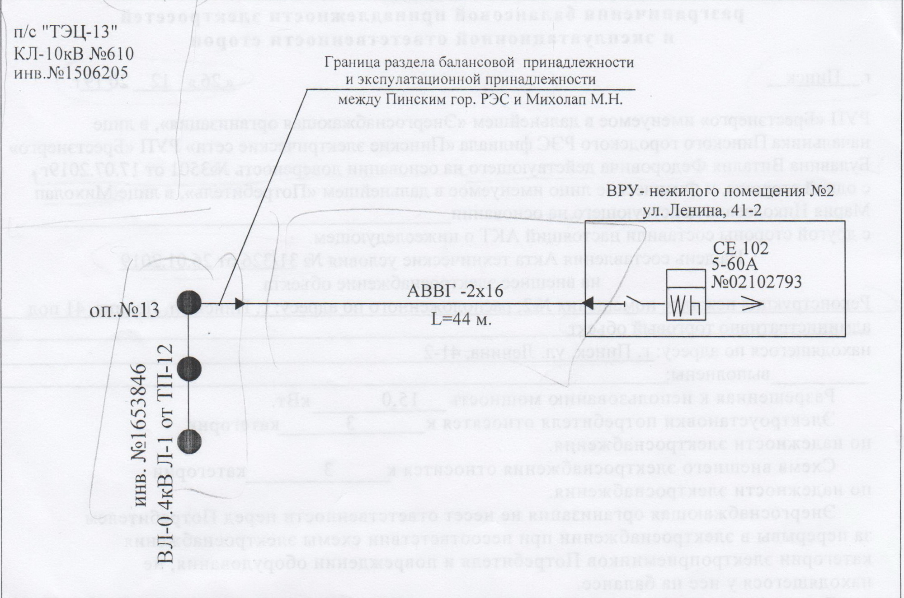

АКТ
разграничения балансовой принадлежности электросетей
и эксплуатационной ответственности сторон
г. <Пинск> | <20.03.2020> |
РУП «Брестэнерго» именуемое в дальнейшем «Энергоснабжающая организация», в лице начальника <Пинского Сельского> РЭС филиала «Пинские электрические сети» РУП «Брестэнерго» <Забавнюка Владимира Францевича> действующего на основании доверенности <от 01.09.2019 №2432>г. с одной стороны, и [Юридическое] лицо <> именуемое в дальнейшем «Потребитель», в лице <Шандова Зоя Николаевна> [действующ. на основании ]<доверенности №256 от 12.05.2018> с другой стороны составили настоящий АКТ о нижеследующем.
На день составления Акта технические условия <139> от <05.04.2019>
на внешнее электроснабжение объекта
<"Отопление и ГВС жилого дома">, находящегося по адресу: <дер. Бердуны ул. Спокойная, 21> выполнены
Разрешенная к использованию мощность <5,5> кВт.
Электроустановки потребителя относятся к <3> категории по надежности электроснабжения.
Схема внешнего электроснабжения относится к <3> категории по надежности электроснабжения.
Энергоснабжающая организация не несет ответственности перед Потребителем за перерывы в электроснабжении при несоответствии схемы электроснабжения категории электроприемников Потребителя и повреждении оборудования, не находящегося у нее на балансе.
В соответствии с главой 3 Правил электроснабжения границы раздела устанавливаются следующими:
I. По балансовой принадлежности:
<МТП №371 Л-2> оп. №<28> на балансе <Пинского Сельского> РЭС.
<КЛ 0,4кВ> от <МТП №371 Л-2> оп. №<28> до ВРУ - ??? по ул. Ленина 41-2 и внутреннее эл. оборудование на балансе Потребителя
Граница раздела между <Пинским Сельским> РЭС и <Шандова Зоя Николаевна> <на контактном присоединении КЛ-0,23кВ> от <МТП №371 Л-2> оп. №<28>
II. По Эксплутационной ответственности:
<МТП №371 Л-2> оп. №<28> на балансе <Пинского Сельского> РЭС.
<КЛ 0,4кВ> от <МТП №371 Л-2> оп. №<28> до ВРУ - ??? по ул. Ленина 41-2 и внутреннее эл. оборудование на балансе Потребителя
Граница раздела между <Пинским Сельским> РЭС и <Шандова Зоя Николаевна> <на контактном присоединении КЛ-0,23кВ> от <МТП №371 Л-2> оп. №<28>
Схема питания электроустановки:

ПРИМЕЧАНИЕ
1.Границы по схеме обозначаются: балансовой принадлежности - красной линией; эксплуатационной ответственности - синей.
2.При изменении срока действия Акта, присоединенных мощностей, схемы внешнего электроснабжения, категории надежности электроснабжения, границ балансовой принадлежности и эксплуатационной ответственности Акт подлежит замене.
3.Доверенность потребителя на подписание акта разграничения хранится в энергоснабжающей организации.
4.На схеме питания электроустановки указываются места установки приборов учета, параметры силовых и измерительных трансформаторов и ЛЭП.
5.Потребителю запрещается без согласования с диспетчером энергоснабжающей организации самовольно производить переключения и изменять схему внешнего электроснабжения.
6.Потребителю запрещается без согласования с энергоснабжающей организацией подключать к своим электроустановкам сторонних потребителей.
Представитель энергоснабжающей организации | _____ | <Забавнюк В.Ф.> |